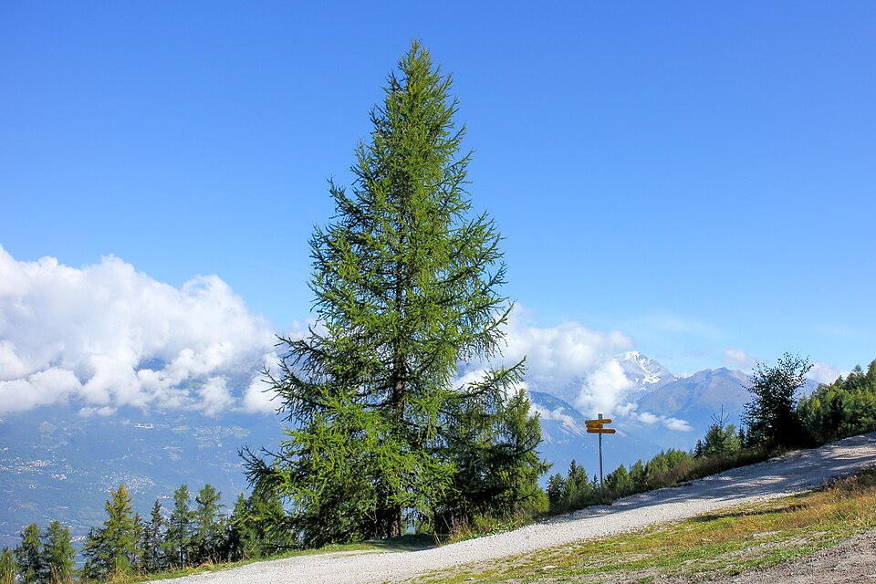
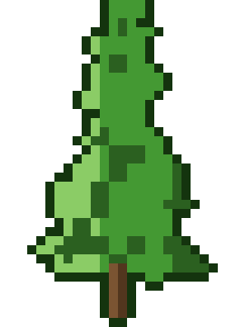

Larix — Larch (Larix)
The only conifer tough enough to drop its needles every winter and come back harder — a battle-scarred mountain warrior whose dense, resinous wood has been building ships and bridges for centuries.
Combat flavor
Dense, resinous wood drives slow but heavy strikes — a true Bruiser cadence. Millennia of lifespan and fire-resistant bark translate to high health and damage reduction; the unique deciduous conifer identity could power a seasonal mechanic (needle-drop = area damage each autumn).
Real-world facts
Typical / max height25–45 m (Larix decidua); up to 60 m (Larix occidentalis, western larch)
Lifespan500–1 000 years (European larch confirmed ~1 000 yr; ages of ~2 000 yr considered plausible in high-alpine specimens)
Wood~575–600 kg/m³ air-dry (Larix decidua 575–590 kg/m³); moderately hard and stiff for a conifer; resinous heartwood is naturally durable; among the densest softwoods
Growth speedMedium (fast in youth on good sites, slower at altitude)
Ecology / notable traitsOnly deciduous conifer native to the Alps; needle-drop in autumn is unique among European conifers; resinous wood resists rot and insects — used for boat planking, bridges, and telegraph poles; dominant in boreal Siberia and Canadian forests; grows at higher altitudes than most conifers; old-growth trees develop deeply furrowed, fire-resistant bark; extremely cold-hardy (to −50 °C)
World raritycommon
Gallery

